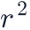
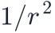
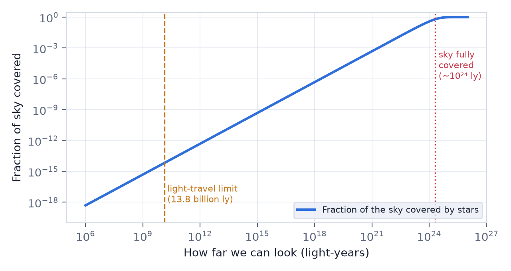

In this lesson you will learn
|
A question a child could ask
Why is the sky dark at night? The obvious answer is "because the Sun is on the other side of the Earth". But think about the stars. If the universe were infinite, unchanging and filled evenly with stars, the night sky should be blazing with light. This contradiction is called Olbers' paradox, after the German astronomer Heinrich Olbers, who discussed it in 1823. Kepler (1610), Halley and de Chéseaux (1744) had already worried about it.
The forest of stars
Imagine standing in a huge forest. Nearby trees are few but look wide; distant trees look thin but there are many of them. If the forest is big enough, every line of sight ends on a tree trunk, and you see a solid wall of wood in every direction.
The same should happen with stars in an infinite universe: every line of sight would eventually end on the surface of a star, and the whole sky would shine as brightly as the surface of the Sun, day and night.
The shell argument
Olbers' argument can also be made with numbers. Divide the space around us into
thin spherical shells of thickness , like the layers of an onion, and suppose
there are  stars per unit volume, each with luminosity
stars per unit volume, each with luminosity  .
.
- The shell at radius
 has volume , so it holds
stars: the number grows as
has volume , so it holds
stars: the number grows as 
. - Each of those stars appears fainter by the inverse-square law
(lesson L1.1): its flux is , which falls as

.
The light we receive from one shell is therefore
Every shell contributes the same The distance |
A failed solution: dust
A tempting answer is that dust between the stars absorbs the distant light. Olbers himself suggested this. It does not work: in an eternal universe the dust would absorb energy until it became as hot as the starlight around it, and then it would glow just as brightly. Absorption only delays the problem.
The real solution: the universe has a finite age
The key assumptions were that the universe is infinitely old and unchanging. Both are false.
- Light needs time to travel. The universe is about 13.8 billion years old, so we can only receive light from a limited region: the observable universe. Light from farther away has not reached us yet.
- Stars do not live forever. Stars shine for millions to billions of years and have existed only for the last ~13.5 billion years. There is simply not enough energy in all the stars to fill the universe with light as bright as a stellar surface.
How far would we need to see for lines of sight to hit a star? With about
 Sun-like stars per cubic megaparsec (a realistic average), a straight line
travels about light-years before it meets a stellar surface. The
observable universe is some
Sun-like stars per cubic megaparsec (a realistic average), a straight line
travels about light-years before it meets a stellar surface. The
observable universe is some  times smaller than that.
times smaller than that.

A tiny fraction of the sky Within the 13.8 billion light-years that light has had time to cross, the stars cover only about of the sky. The sky is dark because the universe is too young and too sparsely filled with stars, not because the stars are hidden. |
A poet's insight The first person to state the correct solution was probably the writer Edgar Allan Poe. In his 1848 essay Eureka he suggested that we see darkness in the gaps between stars because light from beyond has not had time to reach us. Lord Kelvin worked out the physics quantitatively in 1901. |
Try it: Olbers' Paradox Simulator In the Olbers' Paradox Simulator, start from Olbers' universe and switch on a finite age, stellar lifetimes and expansion one at a time. |
Try it: Cosmology Calculator Look up the age of the universe and the lookback time to distant galaxies: this finite time is what keeps the sky dark. |
What about the expanding universe?
Cosmic expansion also darkens the sky. Light from distant galaxies is redshifted (lesson L0.3), so each photon arrives with less energy, and photons arrive less often. This makes distant sources dimmer than the simple inverse-square law suggests. Detailed calculations show that expansion reduces the night-sky brightness by roughly a factor of two or three, while the finite age of the universe and the finite lifetimes of stars reduce it by an enormous factor. Expansion helps, but it is not the main reason.
Try it: Olbers' Paradox Simulator Choose "Infinitely old but expanding" in the Olbers' Paradox Simulator: redshift dimming alone can darken the sky only if the universe expands fast enough compared with the distance between stars. |
The sky is not completely dark
Look at the sky with microwave eyes and it does glow uniformly in every direction. This is the cosmic microwave background, light released when the whole universe was a hot glowing gas at about 3 000 K (lesson L1.5). Back then, every line of sight really did end on a glowing surface, just as Olbers imagined. Expansion has since stretched that light by a factor of about 1 100, cooling it to 2.7 K, far too cold for our eyes to see.
The extragalactic background light All the galaxies that ever shone also create a faint diffuse glow, the extragalactic background light. Measuring it tells astronomers how much light all stars have produced over cosmic history. |
Remember this
|